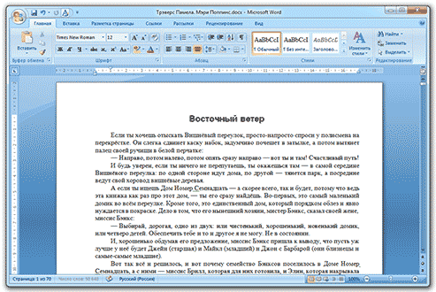
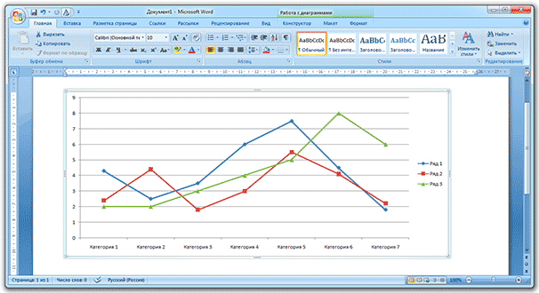
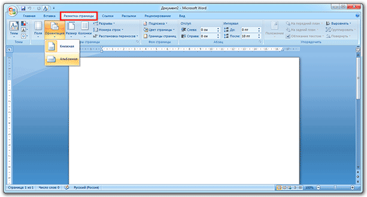
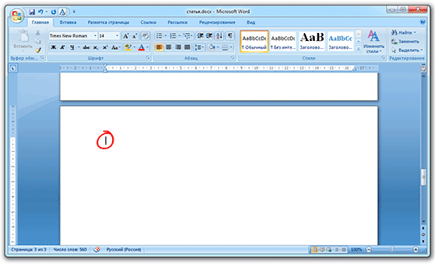
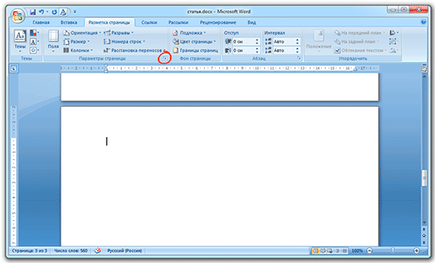
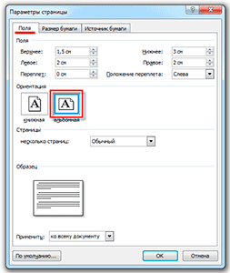
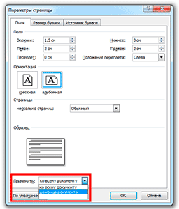

Альбомные страницы в Word
При создании нового документа в Ворде по умолчанию установлен вертикальный вид страниц, который еще называют книжным. Для большинства текстовых документов, инструкций и даже книг он является наиболее подходящим.
Однако бывают ситуации, когда нужен горизонтальный вид. Например, при вставке больших графиков, фотографий, других широких визуальных объектов.
На заметку. То, как лист размещен, вертикально или горизонтально, называется ориентация.
Как сделать все листы альбомными
- Вверху программы переходим в раздел «Разметка» или «Макет».
- Нажимаем на кнопку «Ориентация» и выбираем вариант «Альбомная». 
Теперь все листы в документе будут горизонтальными. Если нужно вернуть вертикальный вид, выполняем то же самое, только из списка выбираем «Книжная».
Как перевернуть только одну страницу
Часто бывает так, что нужно перевернуть не все страницы, а только одну. Ну, или несколько. Например, в курсовой работе, где основная часть, это текст, но несколько листов выделено под изображения и графики. Тогда гораздо удобнее, если они будут горизонтальными.
1. Ставим курсор на ту страницу, которую нужно перевернуть. Для этого просто щелкаем по ней, чтобы замигала палочка.
2. Переходим во вкладку «Разметка» или «Макет» в верхней части программы и нажимаем на маленькую стрелочку в строке «Параметры» (справа).
В версии 2016-2020 это делается немного иначе: заходим в «Макет», выбираем элемент «Поля» и внизу ищем строчку «Настраиваемые поля».
3. В появившемся окошке (в закладке «Поля») в пункте «Ориентация» щелкаем по «Альбомная».
4. Затем внизу окна, в списке «Применить», выбираем «до конца документа» и нажимаем «ОК».
Теперь этот лист и следующие за ним будут горизонтальными.
Если нужно, чтобы в документе был только один перевернутый лист или парочка, то сделайте то же самое, но наоборот:
- Поставьте мигающий курсор на страницу, которая должна быть книжной (просто щелкните по ней).
- Во вкладке «Макет» нажмите на маленькую стрелку рядом с надписью «Параметры».
- В окошке укажите ориентацию «Книжная» и внизу выберите «до конца документа».